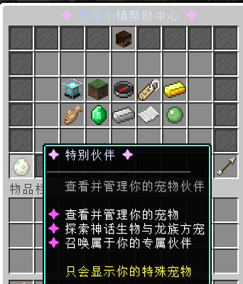
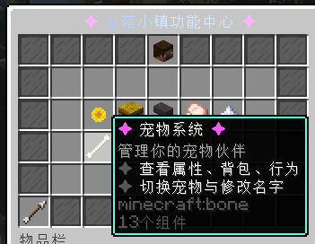

Starfall Town Guide
宠物系统 / MCPets & MyPet
特殊伙伴收集与普通宠物养成的玩家说明。
两套宠物系统怎么区分
| 系统 | 定位 | 在哪里看 |
|---|---|---|
| MCPets | 特殊模型宠物，偏收集、外观、活动和 Boss 奖励。 | 主菜单的特别伙伴 / 宠物相关入口 |
| MyPet | 传统宠物养成，可查看属性、背包、技能、行为与改名。 | 更多帮助菜单里的宠物系统 |
MCPets 获取方式
签到奖励在线奖励委托任务BOSS 挑战主城 NPC 购买活动兑换
MyPet 基础操作
- 打开更多帮助菜单，进入“宠物系统”。
- 查看宠物属性、背包、技能、行为模式。
- 按菜单提示切换宠物状态或修改名字。
- 战斗宠物请注意安全区域和 Boss 区规则。
菜单示例


玩家提醒
特殊宠物通常只能通过指定渠道获得。不要相信非官方交易，宠物权限以服务器系统记录为准。
获得特殊宠物
MCPets 特殊宠物主要来自签到、在线奖励、委托任务、Boss 挑战和主城 NPC 购买；MyPet 的基础操作在“更多帮助”菜单中查看。